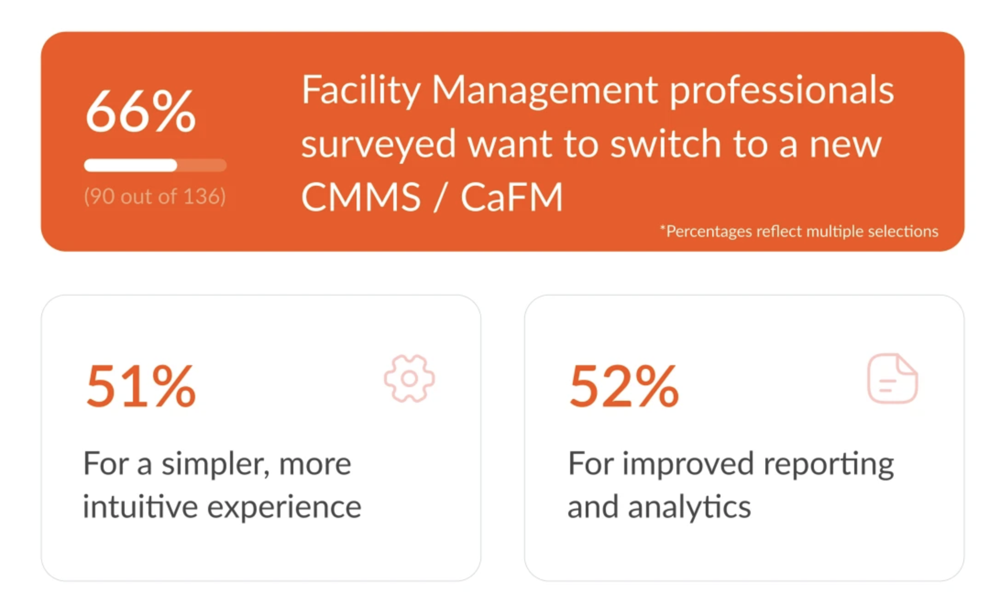

Simplicity in CMMS: A Necessity, Not a Choice
Imagine assembling an IKEA bed frame without a manual. On top of the flimsy wood, you have to figure out where to put the hundreds of tiny dowels based on what you saw in the store and then prepare to panic after you see that there are 25 screws and dowels still in the bag. It's frustrating, right? That's how it feels when a Computerized Maintenance Management Software (CMMS) is too complex. Workers won't use it or they might not use it the right way. A simple CMMS is like a game with easy controls - everyone wants to play, and everyone knows how to win. It means more people will use it correctly, making sure all the machinery, equipment and high-cost assets are properly maintained and repaired. This leads to fewer breakdowns, less downtime, and ultimately, saves the company money. No seriously, why is simplicity so important? Let's take hospitality, for example. Imagine a hotel where every repair and maintenance task, from a flickering light in the lobby to an air conditioner that's not cooling in one of the rooms, is addressed quickly and efficiently. This is possible when the maintenance staff can easily log, track, and complete tasks using a straightforward system. Such efficiency not only keeps the hotel running smoothly but also significantly enhances guest satisfaction, as issues are resolved swiftly, ensuring a pleasant stay for all. Facility managers' needs are no different. They are tasked with maintaining a wide range of assets across multiple locations, making simplicity in CMMS not just a preference but a necessity. An intuitive CMMS can empower teams to manage these locations more efficiently, ensuring that each task, from routine inspections to urgent repairs, is handled promptly. Every second of downtime can equate to significant financial loss, but a simple CMMS turns this challenge into an opportunity for seamless operation and cost savings. That's why the manufacturing sector thrives on minimizing downtime and maintaining optimal operational efficiency. A simple but efficient CMMS can be a game-changer here by enhancing safety measures and reducing production interruptions. By minimizing disruptions, companies can ensure continuous production flow, reducing waste and increasing output, which directly contributes to the bottom line. But it's not just manufacturing, facility management and hospitality. A simple to use CMMS is the lifeblood of sectors like Transport & Logistics, Property Management, Food and Beverages, etc., The question then arises: how can these challenges be seamlessly addressed? Understanding the unique demands of these sectors is the first step towards crafting a solution. Imagine a platform that transforms the complexities of work order management, asset management, preventive maintenance, inspections, and training into a streamlined process. By embracing a mobile-first, password-less approach, such a system could offer effortless access with just a single tap, breaking down barriers to entry and boosting user engagement. The goal is to simplify and elevate the experience for everyone involved, from frontline workers to management teams, making sophisticated tasks feel more approachable and less daunting At QByte, simplicity is not just a design principle, it's an art and creed.
Blog Title 2

First two lines of the blog content...